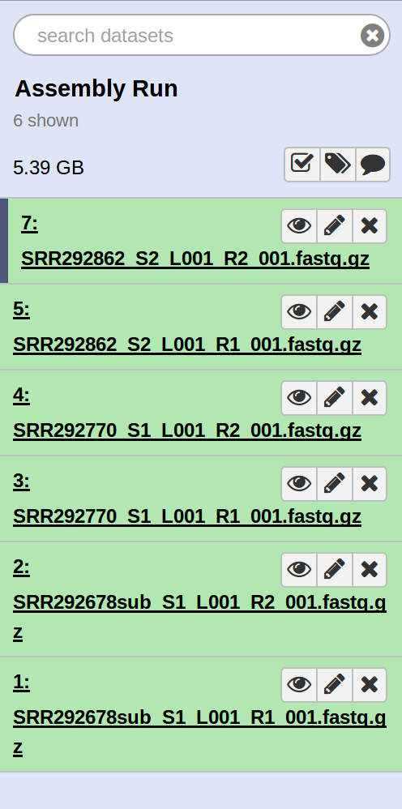
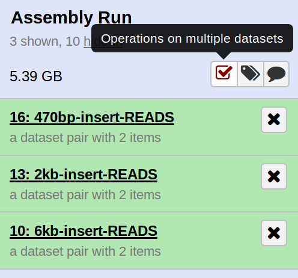

Making frequent use of the 'History' tab within Galaxy will enable you to accurately manage the workflow of whatever pipeline you are managing. To start off, we will first import the data necessary for this step. To do that, navigate to the following link: https://usegalaxy.org/u/niemasd/h/assembly and click 'Import history'. Now let's name the imported history "Assembly Run"

2.
Let's organize these reads. To do this, select the button on the history with a checkbox. Then select "SRR292862_S2_L001_R2_001.fastq.gz" and "SRR292862_S2_L001_R1_001.fastq.gz". The R2 refers to the fact that this is the reverse read, and the R1 refers to a forward read. The three pairs of sequencing data correspond to sequencing runs with different insert sizes in each file. SRR292862 refers to an insert size of 6kb or 6,000 base pairs. Let's rename this to make it more clear. To do that, click on 'For all selected...' and select Build Dataset Pair. Ensure that the correct reads match to forward/reverse and rename the dataset to something like "6kbinsert-fqreads". Do this for each pair of datasets, note that SRR292862 = 6kb inserts, SRR292770 = 2kb inserts, and SRR292678sub = 470bp inserts. At the end, your history should look something like the photo on the right.

3.
Now we will run Unicycler to assemble these reads into contigs and scaffolds. Find the Unicycler tool by searching for it on the toolbar on the left. Select it, and use the Paired Collections generated in the previous step as the 'Short Reads'. The rest of the options can be left to their default settings. Hit Execute and wait for Unicycler to run for each collection of reads. NOTE: It might take a while for the jobs to begin running, this is normal!